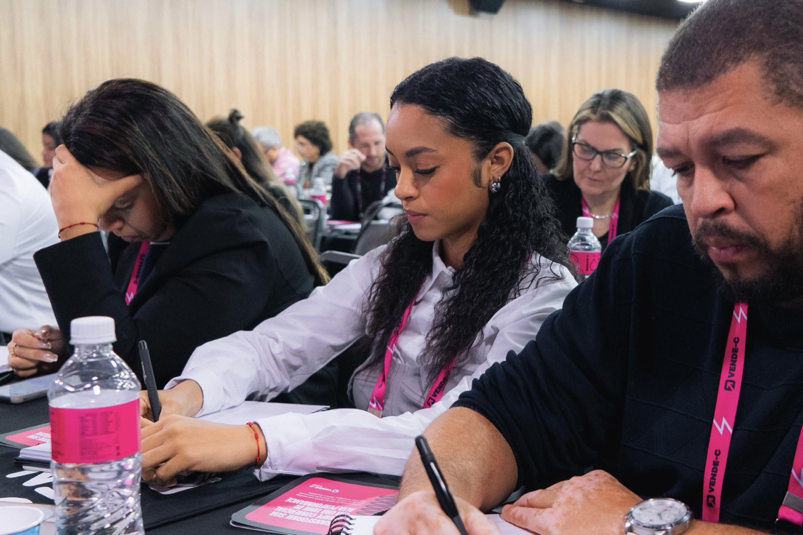

01 · Curso · Vendas
Vende-C
Formação prática em vendas: abordagem ao cliente, técnicas de venda, negociação e construção de funil comercial, do primeiro contato ao fechamento. Uma base que conecta conteúdo nas redes ao que realmente importa para a marca: vender.
Negociação
Funil comercial
Abordagem
